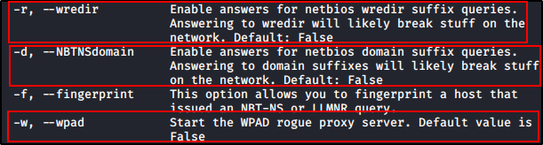

Capturing NTLMv2 Hashes with Responder
On Kali Linux:
Use "Responder" from Impacket (Remember: see ifconfig to see your interface name)
-v = Verbose



On Frank Castle Machine:
We will open a file share, in this case we will go for the Kali Machine


But on our Kali Machines, this happened:
We got an hash!!